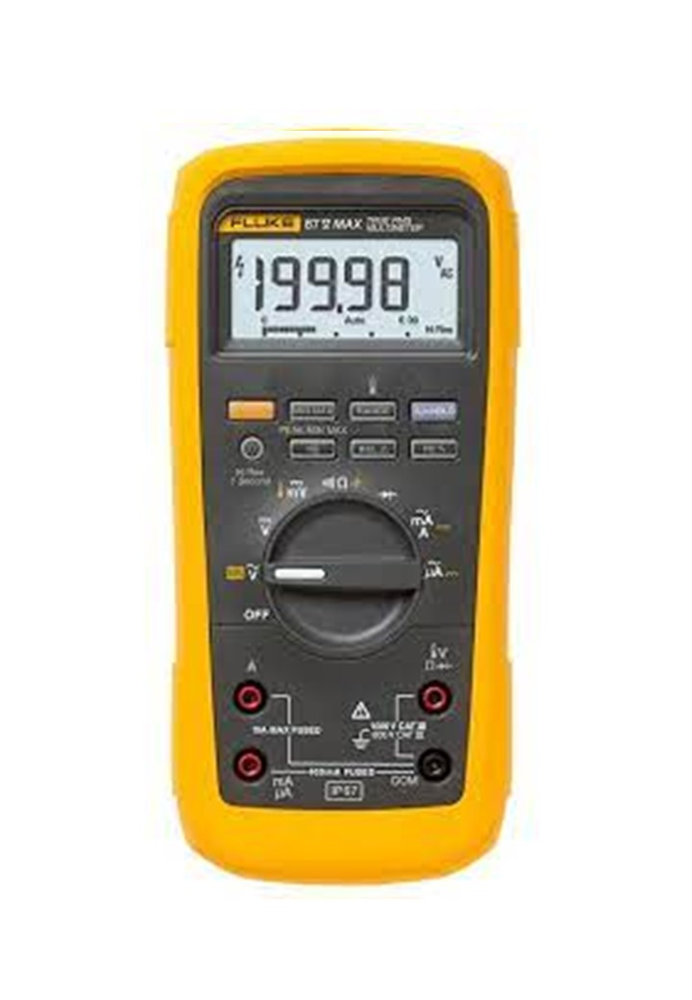
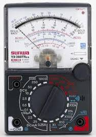
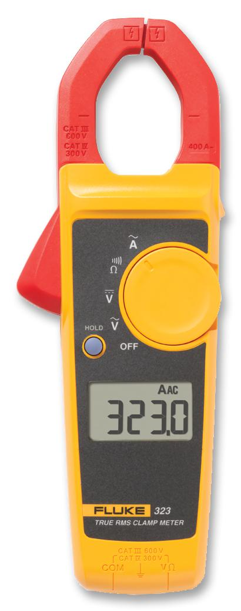
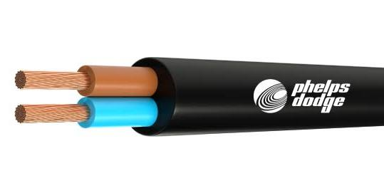

⚡ ส่วนที่ 2: ไฟฟ้าเบื้องต้นสำหรับ Smart Farm
พื้นฐานการใช้งานเครื่องมือและอุปกรณ์เพื่อความปลอดภัย
หัวใจสำคัญของ Smart Farm คือการทำงานร่วมกันระหว่างซอฟต์แวร์และฮาร์ดแวร์ การเข้าใจพื้นฐานไฟฟ้าจะช่วยให้ระบบทำงานได้อย่างเสถียร
1. ประเภทของไฟฟ้าที่ใช้ในฟาร์ม
2. การใช้เครื่องมือ (Tools)

มิเตอร์ดิจิตอล
ใช้วัดค่าแรงดันและกระแสไฟฟ้าอย่างแม่นยำ เหมาะสำหรับงานละเอียดในระบบ IoT
คลิกเพื่ออ่านเพิ่มเติม

มิเตอร์เข็ม
เหมาะสำหรับเช็กความต่อเนื่องของวงจร หรือดูค่าที่มีการเปลี่ยนแปลงบ่อยๆ
คลิกเพื่ออ่านเพิ่มเติม

แคลมป์มิเตอร์
เหมาะสำหรับเช็กวัดค่ากระแสไฟฟ้า (แอมป์) ที่ไหลผ่านสายไฟ
คลิกเพื่ออ่านเพิ่มเติม3. อุปกรณ์ไฟฟ้าหลัก

สายไฟ
ทำหน้าที่เป็น "ตัวนำไฟฟ้า" หรือทางเดินเพื่อให้กระแสไฟฟ้าไหลจากแหล่งกำเนิดไปยังอุปกรณ์ต่างๆ
คลิกเพื่ออ่านเพิ่มเติม
เบรกเกอร์ (Breaker)
ตัดไฟอัตโนมัติเมื่อเกิดไฟเกินหรือไฟช็อต เพื่อป้องกันสายไฟไหม้

Magnetic Contactor
สวิตช์แม่เหล็กสำหรับตัดต่อไฟให้ปั๊มน้ำขนาดใหญ่ โดยรับคำสั่งจากอุปกรณ์ IoT

โอเวอร์โหลด (Overload)
อุปกรณ์ป้องกันปั๊มน้ำไหม้ โดยจะตัดวงจรเมื่อมอเตอร์ทำงานหนักเกินไป

Sonoff Switch Wi-Fi
สวิตช์อัจฉริยะสำหรับควบคุมผ่าน Wi-Fi ใช้สั่งงาน Magnetic Contactor เพื่อเปิด-ปิดปั๊มน้ำผ่านมือถือ